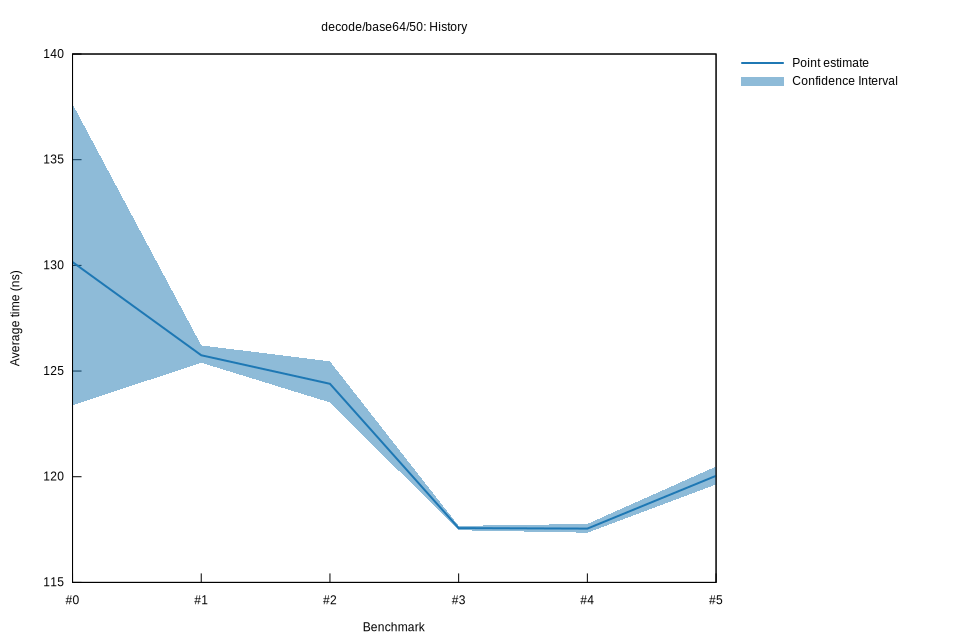

# 52022-10-16T20:18:26+03:00
|
Lower Bound |
Estimate |
Upper Bound |
| Value: |
119.63ns |
120.04ns |
120.48ns |
| Throughput: |
542.07MiB/s |
540.21MiB/s |
538.25MiB/s |
| Change in Value: |
+1.2538% |
+1.5464% |
+1.8281% |
| Change in Throughput: |
-1.2383% |
-1.5228% |
-1.7953% |
No change in performance detected.
# 42022-10-16T17:35:39+03:00
|
Lower Bound |
Estimate |
Upper Bound |
| Value: |
117.35ns |
117.55ns |
117.77ns |
| Throughput: |
552.62MiB/s |
551.70MiB/s |
550.66MiB/s |
| Change in Value: |
-0.4331% |
-0.1374% |
+0.1641% |
| Change in Throughput: |
+0.4350% |
+0.1376% |
-0.1638% |
Change within noise threshold.
# 32022-10-15T17:24:34+03:00
|
Lower Bound |
Estimate |
Upper Bound |
| Value: |
117.47ns |
117.57ns |
117.68ns |
| Throughput: |
552.06MiB/s |
551.59MiB/s |
551.09MiB/s |
| Change in Value: |
-6.2238% |
-5.3868% |
-4.6528% |
| Change in Throughput: |
+6.6369% |
+5.6935% |
+4.8799% |
No change in performance detected.
# 22022-10-15T16:58:20+03:00
|
Lower Bound |
Estimate |
Upper Bound |
| Value: |
123.52ns |
124.40ns |
125.46ns |
| Throughput: |
525.03MiB/s |
521.32MiB/s |
516.92MiB/s |
| Change in Value: |
-1.7930% |
-1.0377% |
-0.0576% |
| Change in Throughput: |
+1.8257% |
+1.0486% |
+0.0577% |
No change in performance detected.
# 12022-10-08T17:33:48+03:00
|
Lower Bound |
Estimate |
Upper Bound |
| Value: |
125.39ns |
125.75ns |
126.22ns |
| Throughput: |
517.18MiB/s |
515.72MiB/s |
513.80MiB/s |
| Change in Value: |
-0.8290% |
+2.0387% |
+4.5444% |
| Change in Throughput: |
+0.8359% |
-1.9980% |
-4.3468% |
Change within noise threshold.
# 02022-10-08T17:14:15+03:00
|
Lower Bound |
Estimate |
Upper Bound |
| Value: |
123.38ns |
130.16ns |
137.64ns |
| Throughput: |
525.60MiB/s |
498.25MiB/s |
471.17MiB/s |